Un recorrido por las transformaciones sociales, culturales, educativas y jurídicas en la manera de comprender a los niños y las niñas.
Esta página web presenta el proceso de construcción histórica de las infancias y diferentes características que permiten reconocer cómo ha cambiado la manera de identificar a los niños y niñas a través del tiempo. Mediante las distintas pestañas se presentarán temas relacionados con las infancias, sus contextos, desafíos, realidades y las posibilidades de transformación. Esto se irá desarrollando de manera progresiva durante todo el curso.
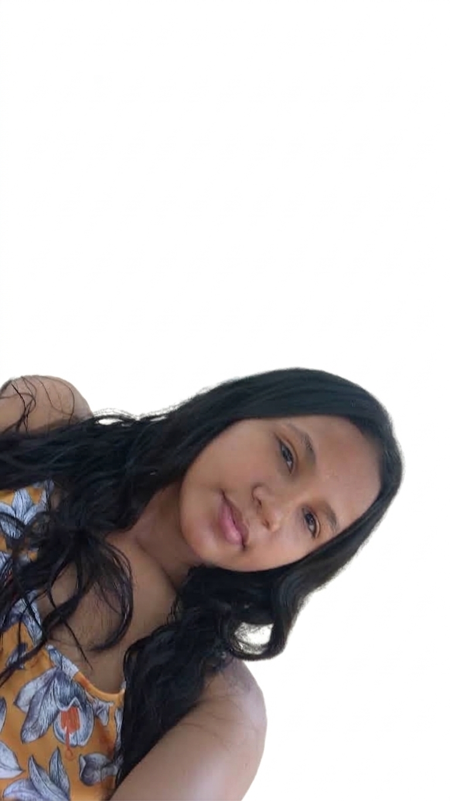
Línea del tiempo interactiva sobre las transformaciones sociales, culturales, educativas y jurídicas en la manera de comprender a los niños y las niñas.
Contexto social: Las sociedades antiguas estaban organizadas de manera jerárquica. La familia, la autoridad y las diferencias sociales tenían gran importancia. La vida de los niños dependía de su posición social y de las funciones que se esperaba que cumplieran dentro de la familia y la comunidad.
🎭 Contexto cultural: Las creencias religiosas y los rituales tenían un lugar importante en la vida cotidiana. Las prácticas familiares y comunitarias transmitían normas, valores y costumbres. En las representaciones artísticas de la época, los niños podían aparecer vinculados a la familia, la religión o las actividades de la comunidad, sin que existiera una representación de la infancia como la conocemos actualmente.
👧 Concepción de las infancias: La infancia estaba subordinada a la autoridad familiar y a las necesidades de la sociedad. En algunas sociedades antiguas, el niño podía ser considerado parte de la posesión o autoridad del padre y su vida dependía de las decisiones de los adultos. También existieron prácticas como el abandono y el infanticidio. La experiencia infantil era muy diferente según el género, la posición social y la familia.
🧠 Autores y referentes:
• Platón: reflexionó sobre la educación y la formación de los ciudadanos, otorgando importancia a la organización de la educación.
• Aristóteles: relacionó la educación con la formación de hábitos y virtudes y distinguió momentos del desarrollo y la formación.
• Philippe Ariès: su análisis historiográfico permitió estudiar cómo la idea de infancia se fue construyendo históricamente en las sociedades occidentales.
• Lloyd deMause: analizó históricamente las formas de crianza y las relaciones entre adultos y niños, mostrando cambios en las prácticas hacia la infancia.
⚖️ Transformaciones e hitos: Las formas de crianza y educación estaban ligadas a la familia, la autoridad y la posición social. El abandono y el infanticidio aparecen en los análisis históricos como prácticas que evidencian la vulnerabilidad de los niños. Las reflexiones filosóficas sobre la educación también fueron construyendo distintas ideas sobre su formación.
Contexto social: La sociedad medieval estaba marcada por relaciones de dependencia, diferencias estamentales y una fuerte influencia de la Iglesia. La familia y la comunidad tenían un papel central en la transmisión de costumbres y formas de vida.
📜 Contexto cultural: La religión cristiana tuvo una fuerte influencia en los valores, las prácticas comunitarias y la educación. La vida cotidiana estaba marcada por celebraciones, normas religiosas y costumbres transmitidas por la familia y la comunidad. El arte medieval estuvo muy relacionado con temas religiosos y también representó escenas familiares y de la vida cotidiana.
🧒 Concepción de las infancias: La concepción de la infancia estuvo muy ligada a la moral y a la religión. En la visión cristiana se relacionaba al niño con la idea del pecado original y con la necesidad de formación moral. Además, en muchos contextos los niños eran incorporados tempranamente a las actividades de los adultos, por lo que se ha descrito al niño medieval como un “adulto en miniatura”.
🧠 Autores y referentes:
• San Agustín: reflexionó sobre la educación, la formación moral y la vida espiritual.
• Tomás de Aquino: integró pensamiento filosófico y teológico y destacó la formación de la persona mediante la educación y la adquisición de virtudes.
• Philippe Ariès: estudió históricamente la aparición y transformación de las representaciones de la infancia en Occidente.
• Lloyd deMause: analizó las relaciones de crianza y los cambios históricos en el trato dado a niños y niñas.
⚖️ Transformaciones e hitos: La Iglesia y las instituciones religiosas tuvieron un papel central en la enseñanza y transmisión de valores. Los niños aprendían en la familia, en espacios religiosos o mediante el aprendizaje de oficios. Las diferencias sociales determinaban las oportunidades de educación y las responsabilidades asumidas desde edades tempranas.
Contexto social: Se produjeron cambios políticos, económicos y culturales asociados al Renacimiento, la expansión de los Estados y nuevas formas de pensamiento. Poco a poco aumentó el interés por la educación y por comprender las características particulares de la niñez.
🔭 Contexto cultural: El humanismo, el Renacimiento, la expansión de la cultura escrita y los cambios científicos favorecieron nuevas formas de pensar al ser humano. Las creencias religiosas continuaron teniendo importancia, pero convivieron con ideas humanistas. En el arte y la literatura comenzó a aparecer una mayor atención a la vida familiar y a las características propias de los niños.
🌱 Concepción de las infancias: Se fortaleció la idea de que el niño tiene características y necesidades propias. La infancia empezó a verse con mayor interés educativo y afectivo, alejándose poco a poco de la idea de considerar al niño solamente como un adulto pequeño. Se reconoció la necesidad de instrucción, cuidado y acompañamiento de acuerdo con su proceso de desarrollo.
🧠 Autores y aportes:
• John Locke: planteó la idea de la tabula rasa, destacando el papel de la experiencia y la educación en la formación de la persona.
• Juan Amós Comenio: en la Didáctica Magna propuso una educación organizada para todos y planteó edades escolares, teniendo en cuenta las etapas de formación.
• Jean-Jacques Rousseau: en Emilio o de la educación defendió que el niño tiene un ritmo propio de desarrollo y que la educación debe respetar su naturaleza y sus necesidades.
⚖️ Transformaciones e hitos: La expansión de la educación y de la cultura escrita, junto con las nuevas reflexiones pedagógicas, transformaron progresivamente la manera de comprender la niñez. La infancia comenzó a considerarse una etapa que necesitaba instrucción, cuidado y métodos educativos adecuados a sus características.
Contexto social: La escolarización se amplió y los cambios sociales y económicos llevaron a nuevas discusiones sobre educación, protección y bienestar infantil. Las desigualdades continuaron existiendo, pero aumentó el reconocimiento social de las necesidades de la niñez.
⚖️ Contexto cultural: Las ideas pedagógicas, psicológicas y jurídicas dieron mayor importancia al desarrollo, el juego, el aprendizaje, la protección y la participación. Las comunidades y las instituciones educativas comenzaron a asumir mayores responsabilidades frente al bienestar infantil. También se fortalecieron representaciones culturales de la infancia como una etapa con identidad y necesidades propias.
🫶 Concepción de las infancias: Se avanza hacia una comprensión plural: no existe una sola manera de vivir la infancia. Las condiciones familiares, culturales, sociales y territoriales generan experiencias diversas.
🧠 Autores y aportes:
• María Montessori: desarrolló una propuesta educativa centrada en la autonomía, el ambiente preparado y la actividad del niño.
• Jean Piaget: estudió el desarrollo cognitivo y mostró que los niños construyen conocimientos de manera progresiva.
• Lev Vygotsky: resaltó la importancia de la interacción social y cultural en el aprendizaje y el desarrollo.
⚖️ Transformaciones e hitos normativos:
• Declaración de Ginebra (1924): constituyó un antecedente internacional importante en la protección de la infancia y en el reconocimiento de deberes hacia los niños.
• Convención sobre los Derechos del Niño (1989): consolidó internacionalmente el reconocimiento de niños y niñas como sujetos de derechos, incluyendo protección, educación, participación y bienestar.
Al observar el recorrido histórico, se puede reconocer un cambio progresivo: en la Antigüedad predominó una fuerte subordinación del niño a la autoridad familiar y social; durante la Edad Media tuvieron gran peso las ideas religiosas, la formación moral y la incorporación temprana a actividades adultas; y en la Edad Moderna comenzó a fortalecerse la idea de que la infancia posee características propias y necesita instrucción y cuidado. En los siglos XX y XXI, este proceso se relacionó con la protección internacional y el reconocimiento de niños y niñas como sujetos de derechos.
Conocer la historia de las infancias permite comprender que las formas de educar no son iguales en todos los tiempos ni en todas las culturas. Los aportes historiográficos de Philippe Ariès y Lloyd deMause ayudan a analizar cómo han cambiado las representaciones y las prácticas de crianza. Para la educación infantil actual es importante reconocer las características, necesidades, voces, contextos y derechos de cada niño y niña.
La historia de las infancias muestra que la manera de entender a los niños y las niñas ha cambiado de acuerdo con las condiciones sociales, culturales y educativas de cada época. Este recorrido permite valorar los avances logrados en materia de protección, educación y derechos, pero también reconocer que todavía existen situaciones de desigualdad y exclusión.
Como futuras educadoras infantiles, conocer estas transformaciones nos ayuda a evitar prácticas que desconozcan la voz o la dignidad de los niños. También nos invita a reconocer la diversidad de las infancias, promover su participación y construir ambientes educativos donde cada niño y niña sea escuchado, respetado y acompañado en su desarrollo.
La construcción histórica de las infancias permite comprender que la idea de niño, niña y niñez no ha sido siempre la misma. Las transformaciones sociales, culturales, pedagógicas y normativas han contribuido a reconocer progresivamente a los niños y niñas como personas con necesidades, capacidades y derechos. Por ello, estudiar esta historia es fundamental para fortalecer una educación infantil respetuosa, inclusiva y comprometida con la dignidad y el bienestar de las infancias.
Explora las distintas miradas sobre la infancia:
Explica que los niños construyen activamente el conocimiento al interactuar con el entorno. Su perspectiva destaca los cambios del pensamiento durante el desarrollo y la importancia de proponer experiencias acordes con los procesos de aprendizaje, sin asumir que todos los niños avanzan de manera idéntica.
Junto con María Victoria Alzate-Piedrahita, analiza la infancia desde una perspectiva histórica, social, educativa y cultural. Permite comprender que la infancia no es únicamente una etapa biológica, sino una construcción histórica y social que cambia según el tiempo, la cultura y el contexto. Reconoce a los niños y niñas como sujetos de derechos y experiencias propias.
Sus estudios sobre infancia, educación y sociedad permiten reflexionar sobre cómo los cambios políticos, culturales e institucionales influyen en las experiencias infantiles y en las maneras en que una sociedad representa a los niños y las niñas.
En Condición infantil contemporánea, plantea que la infancia debe comprenderse a partir de las transformaciones de la sociedad contemporánea. Reconoce la diversidad de experiencias infantiles vinculadas con las condiciones sociales, culturales y familiares, e invita a superar la idea de que existe una única manera de vivir la infancia.
Destaca el papel de la interacción social, el lenguaje y la cultura en el aprendizaje y el desarrollo. Las relaciones con adultos y pares pueden apoyar nuevas capacidades, por lo que el acompañamiento pedagógico y la colaboración son importantes.
Invita a reconocer las distintas experiencias infantiles y las representaciones sociales de la infancia. Destaca la importancia del contexto en la educación infantil y la necesidad de repensar las prácticas pedagógicas ante realidades sociales diversas, promoviendo una educación sensible a las necesidades y condiciones de los niños y niñas.
Propone un ambiente preparado, materiales que favorecen la exploración y oportunidades para que los niños desarrollen autonomía. El rol del adulto consiste en observar, acompañar y facilitar experiencias significativas, respetando las características de cada niño.
Su teoría de las inteligencias múltiples invita a reconocer que las capacidades pueden expresarse de diversas maneras. En educación, esta idea inspira variedad de experiencias y formas de participación, sin convertir las categorías en etiquetas rígidas ni limitar las oportunidades.
En sus trabajos sobre el concepto de infancia a lo largo de la historia, examina cómo la idea de niñez se ha transformado con el tiempo. Su enfoque ayuda a cuestionar la idea de que la infancia siempre se ha entendido igual en todas las sociedades.
Historiador conocido por estudiar los cambios en las concepciones de la infancia y la vida familiar, especialmente en la historia europea. Sus planteamientos fueron influyentes, aunque han recibido críticas y no deben generalizarse automáticamente a todas las culturas y épocas.
El recorrido por los autores permite reconocer que la infancia no puede comprenderse desde una sola mirada. Las perspectivas del desarrollo y el aprendizaje ayudan a observar cómo los niños construyen conocimientos, interactúan con otras personas, desarrollan autonomía y expresan capacidades diversas. A su vez, las aproximaciones históricas y sociales muestran que las ideas sobre la niñez cambian según las condiciones culturales, las instituciones y las relaciones de cada época.
Un aporte importante es que invitan a dejar atrás la idea de que todos los niños aprenden de la misma manera o viven experiencias iguales. Cada niño y niña tiene una historia, unos intereses, unas necesidades y un contexto particular. Por eso, la labor pedagógica debe combinar la observación del desarrollo con la escucha, el juego, la interacción y el reconocimiento de sus derechos.
Las teorías no deben aplicarse de forma rígida ni tomarse como recetas universales. Es necesario analizarlas críticamente, considerar sus límites y relacionarlas con las realidades de las infancias actuales. Como futuras licenciadas en Educación Infantil, este análisis nos invita a planear experiencias flexibles, inclusivas y significativas, trabajar junto con las familias y la comunidad, y reconocer a los niños y las niñas como sujetos de derechos.
A continuación se presentan las fichas elaboradas por el grupo:
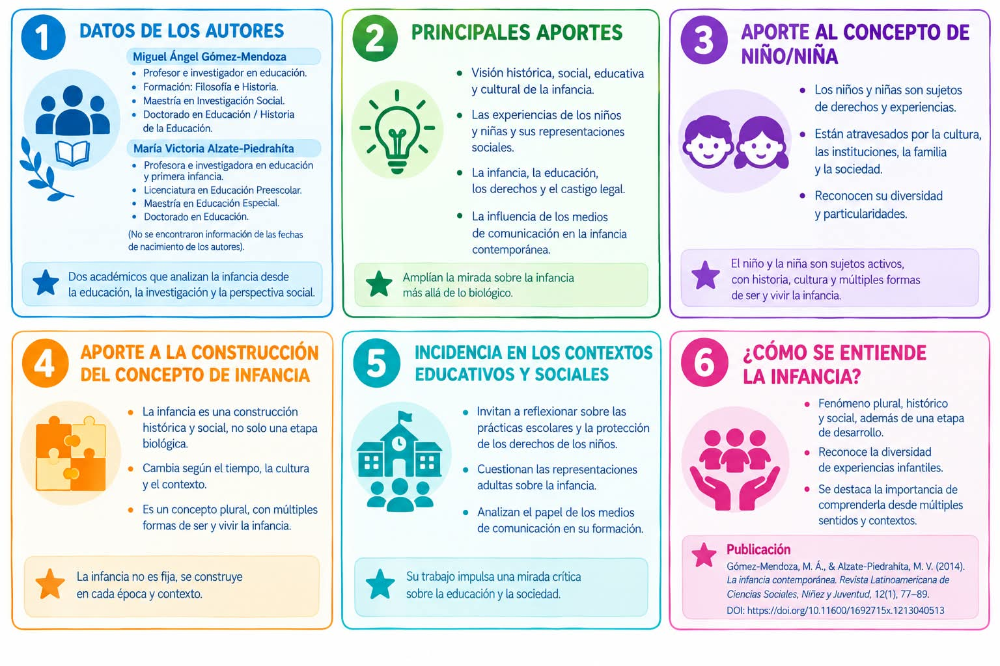
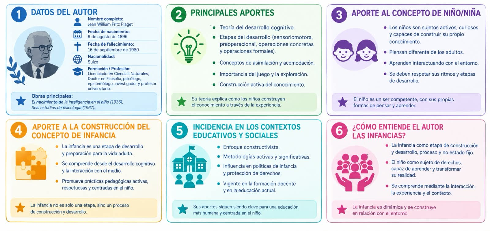
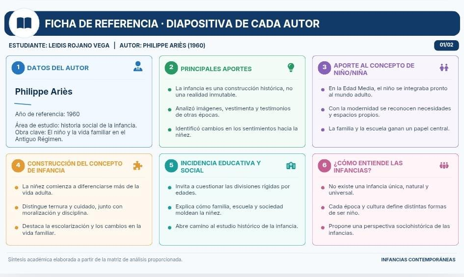
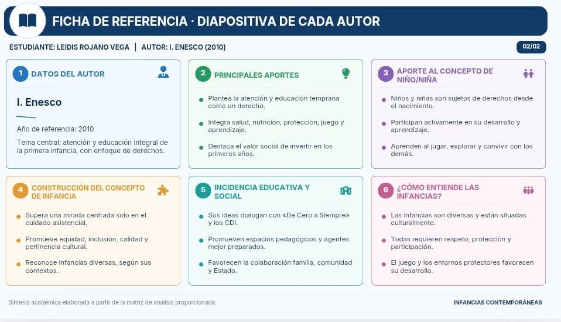
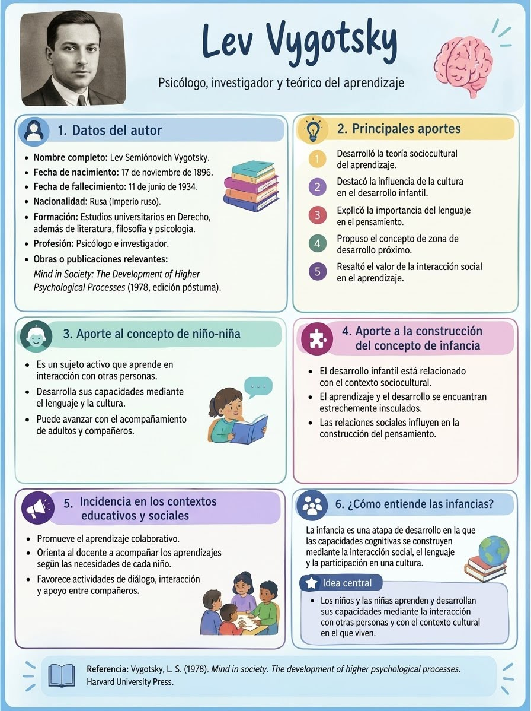
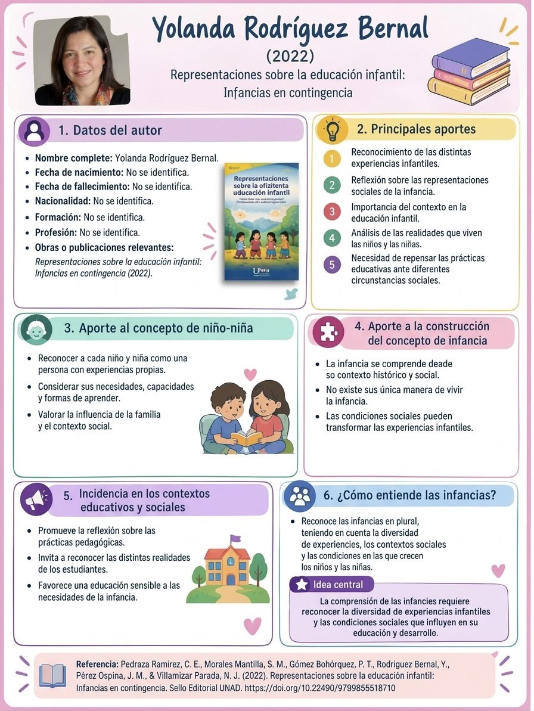
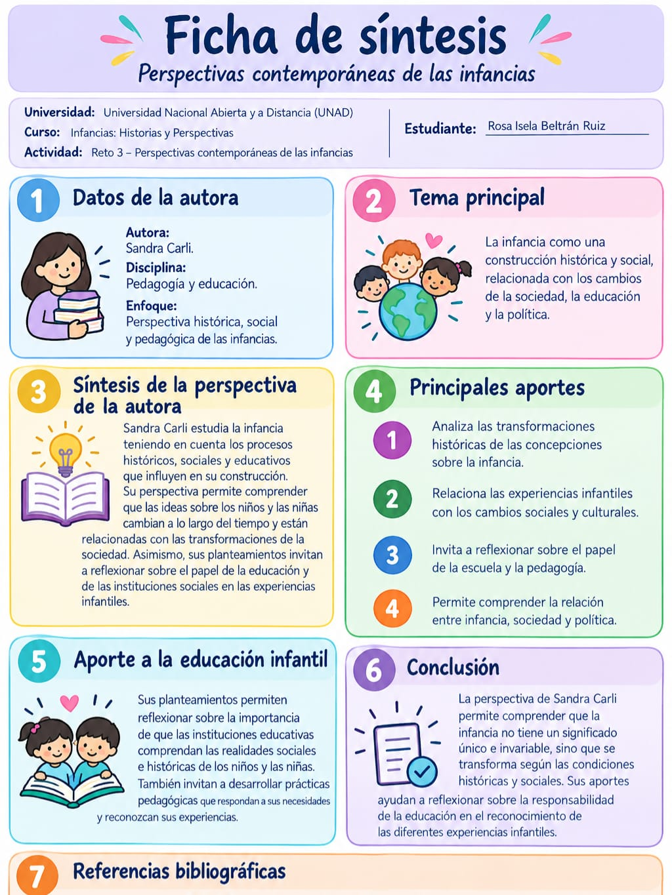
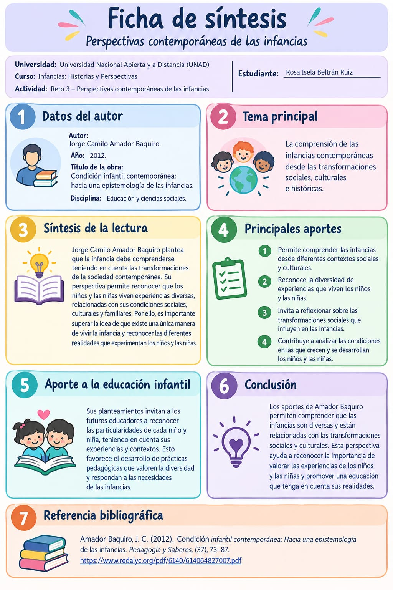
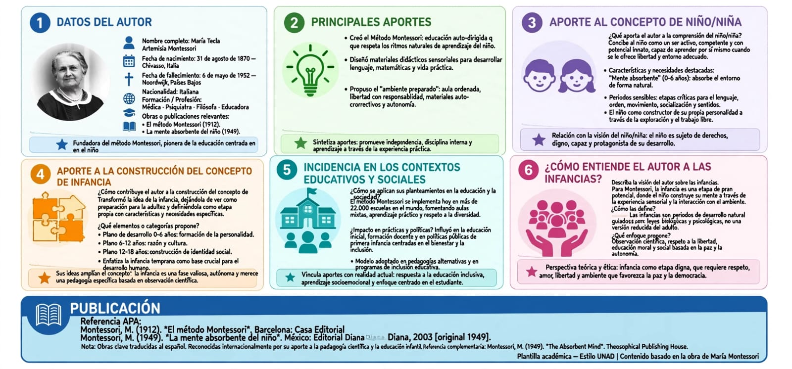
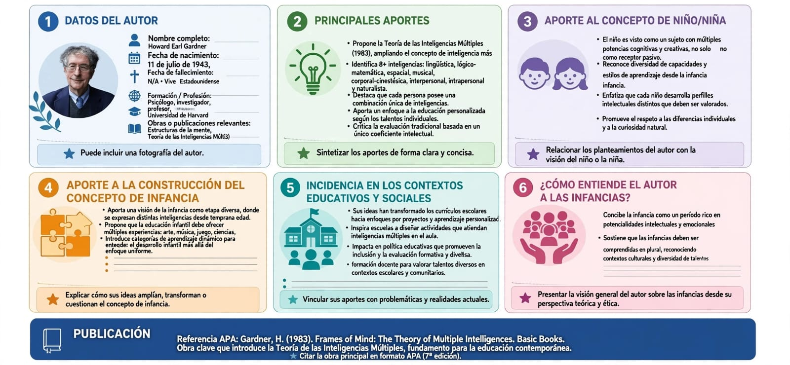
Los aportes de Jean Piaget y Gómez-Mendoza (2014) permiten comprender que la infancia es una etapa fundamental en la que los niños construyen conocimientos mediante la exploración, la interacción y las experiencias con su entorno. Piaget destaca el desarrollo cognitivo y la importancia de respetar los ritmos de aprendizaje de cada niño, mientras que Gómez-Mendoza invita a reconocer la infancia como una construcción histórica, social y cultural. Frente a las concepciones anteriores, en las que los niños eran vistos principalmente como personas que debían obedecer, las perspectivas contemporáneas los reconocen como participantes activos de la sociedad, cuyas necesidades, opiniones y diferencias deben ser valoradas.
Reconocer a los niños y las niñas como sujetos de derechos implica transformar la mirada adultocéntrica que los concibe como objetos de protección, para entenderlos como personas con capacidad para opinar, decidir, participar y transformar su entorno. Este reconocimiento, sustentado en la Convención sobre los Derechos del Niño y en el marco normativo colombiano, exige garantizar no solo su cuidado y bienestar, sino también su derecho a ser escuchados, a la identidad, a la educación de calidad, al juego y a la participación activa. Desde la Educación Infantil, esto significa asumir una práctica pedagógica basada en el respeto, el diálogo y la corresponsabilidad entre familia, escuela y comunidad.
El análisis de las perspectivas contemporáneas de las infancias nos permite comprender que cada niño y niña vive su infancia de manera diferente, de acuerdo con su contexto familiar, social, cultural y educativo. La diversidad no debe considerarse una dificultad, sino una oportunidad para enriquecer las experiencias de aprendizaje. De acuerdo con la UNESCO (2020), la educación inclusiva y equitativa busca eliminar las barreras que impiden que algunas personas accedan a las mismas oportunidades educativas. Estos planteamientos nos invitan a reflexionar sobre la necesidad de construir espacios educativos donde todos puedan participar, aprender y desarrollarse integralmente.
Los contextos familiares, educativos y sociales cumplen una función importante en las vivencias de los niños y las niñas, debido a que influyen en sus formas de aprender, relacionarse y comprender la realidad. Cada infancia se experimenta de distintas maneras, de acuerdo con las condiciones en las que se desarrollan. Comprender esos contextos ayuda a reflexionar sobre las circunstancias que pueden influir en su aprendizaje, desarrollo y bienestar. Por eso, es esencial que las prácticas pedagógicas tengan presente las diferentes realidades de la infancia, valoren sus particularidades y creen espacios inclusivos.
El desarrollo de este trabajo nos permitió ampliar nuestra comprensión de las infancias a partir de las diferentes perspectivas históricas, sociales, culturales y educativas estudiadas. Como futuras licenciadas en Educación Infantil, estos aprendizajes fortalecen nuestro compromiso de desarrollar prácticas pedagógicas inclusivas, respetuosas y contextualizadas, que tengan en cuenta las necesidades, los intereses y las experiencias particulares de cada niño y niña. Asimismo, el trabajo colaborativo nos permitió compartir conocimientos, escuchar diferentes opiniones y construir reflexiones conjuntas que enriquecen nuestra formación profesional.
En esta pestaña se abordarán las realidades, contextos y desafíos que atraviesan las infancias en la actualidad, así como las problemáticas que requieren atención y transformación.
Su contenido se irá desarrollando de manera progresiva durante el curso.
✨ PRÓXIMAMENTE ✨Este espacio dará lugar a las voces de los niños y las niñas, así como a propuestas y acciones orientadas a transformar las realidades de las infancias.
Su contenido se irá desarrollando de manera progresiva durante el curso.
✨ PRÓXIMAMENTE ✨Amador Baquiro, J. C. (2012). Condición infantil contemporánea: Hacia una epistemología de las infancias. Pedagogía y Saberes, (37), 73–87. https://www.redalyc.org/pdf/6140/614064827007.pdf
Ariès, P. (1987). El niño y la vida familiar en el Antiguo Régimen. Taurus.
Carli, S. (Comp.). (2003). Estudios sobre comunicación, educación y cultura. La Crujía.
Comenio, J. A. (1986). Didáctica magna. Porrúa.
deMause, L. (Ed.). (1974). The history of childhood. Psychohistory Press.
Enesco, I. (2010). El concepto de infancia a lo largo de la historia. Universidad Complutense de Madrid.
Gardner, H. (1983). Frames of mind: The theory of multiple intelligences. Basic Books.
Gómez-Mendoza, M. Á., & Alzate-Piedrahita, M. V. (2014). La infancia contemporánea. Revista Latinoamericana de Ciencias Sociales, Niñez y Juventud, 12(1), 77–89. https://doi.org/10.11600/1692715x.1213040513
Locke, J. (1986). Some thoughts concerning education. Hackett Publishing.
Montessori, M. (1912). El método Montessori. Casa Editorial.
Montessori, M. (1949). La mente absorbente del niño.
Pedraza Ramírez, C. E., Morales Mantilla, S. M., Gómez Bohórquez, P. T., Rodríguez Bernal, Y., Pérez Ospina, J. M., & Villamizar Parada, N. J. (2022). Representaciones sobre la educación infantil: Infancias en contingencia. Sello Editorial UNAD. https://doi.org/10.22490/97899855518710
Piaget, J. (1991). Seis estudios de psicología. Labor.
Rousseau, J.-J. (2000). Emilio o de la educación. Alianza.
Sociedad de Naciones. (1924). Declaración de Ginebra sobre los Derechos del Niño.
UNICEF. (1989). Convención sobre los Derechos del Niño.
Vygotsky, L. S. (1978). Mind in society: The development of higher psychological processes. Harvard University Press.